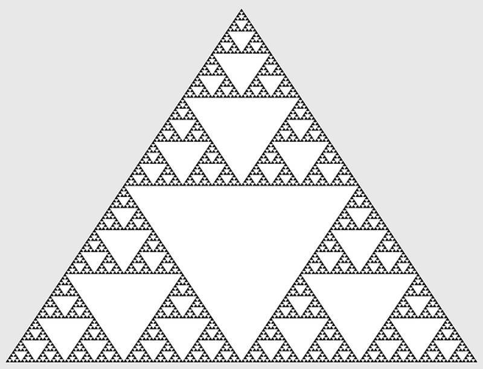

OBM — Olimpíada Brasileira de Matemática
Provas anteriores, gabaritos e materiais de preparação para competições nacionais.
Acessar provas e gabaritos da OBM (abre em nova aba)PORTFÓLIO ACADÊMICO
Matemática pura • Ciências teóricas • Computação • Pesquisa
Estudante do Ensino Médio construindo uma trajetória dedicada ao conhecimento científico, à matemática e à pesquisa.
UM POUCO SOBRE MIM
Sou estudante do Ensino Médio e tenho grande interesse por matemática pura, física, química e ciência da computação. Gosto de estudar além do currículo escolar, enfrentar problemas desafiadores e compreender as ideias e estruturas matemáticas que fundamentam diferentes áreas do conhecimento.
Meu objetivo é construir uma formação científica sólida, desenvolvendo tanto a capacidade de resolver problemas quanto o rigor necessário para compreender demonstrações, teorias e conceitos abstratos.

MEU PRINCIPAL INTERESSE
Tenho especial interesse em compreender a matemática de maneira rigorosa, estudando definições, teoremas, demonstrações e as conexões entre diferentes áreas. Quero avançar dos fundamentos até tópicos universitários e, futuramente, de pesquisa.
BIBLIOTECA MATEMÁTICA
Minha formação matemática é orientada pelo estudo rigoroso de definições, teoremas, demonstrações e problemas. Tenho interesse em referências que vão dos fundamentos do cálculo e da álgebra até áreas avançadas da matemática pura.
Esta biblioteca reúne referências para minha trajetória de estudos. A presença de um título não significa necessariamente que sua leitura já tenha sido concluída.
Referência para estudar números reais, sequências, limites, continuidade e demonstrações rigorosas.
Uma referência clássica em análise matemática, com desenvolvimento teórico conciso e rigoroso.
Estudo de espaços vetoriais e transformações lineares com abordagem matemática.
Espaços vetoriais, operadores lineares e uma abordagem conceitual da álgebra linear.
Tratamento aprofundado de espaços vetoriais, transformações lineares e teoria espectral.
Referência abrangente para estruturas algébricas e desenvolvimento de uma formação algébrica avançada.
Cálculo com ênfase em demonstrações, rigor e compreensão conceitual.
Desenvolvimento sistemático do cálculo, conectando análise, álgebra linear e integração.
Uma abordagem ampla do cálculo e da análise, com motivação matemática e aplicações.
Espaços topológicos, continuidade, compacidade, conexidade e fundamentos da topologia geral.
Uma jornada pela teoria dos números, explorando propriedades dos números primos, problemas aritméticos e ideias matemáticas relacionadas à resolução de problemas olímpicos.
Referência avançada em teoria analítica dos números, funções aritméticas e distribuição de números primos.
Referências sobre teoria dos números, combinatória, desigualdades, geometria, equações diofantinas e resolução de problemas matemáticos.
Problemas desafiadores e soluções detalhadas em álgebra, análise, combinatória e teoria dos números.
Coleção de problemas da Olimpíada Internacional de Matemática, útil para estudar técnicas, ideias e demonstrações olímpicas.
ALÉM DOS LIVROS
Tenho o objetivo de, no futuro, participar de projetos de pesquisa e investigar problemas matemáticos e científicos. Entre as áreas que mais despertam minha curiosidade estão teoria dos números, combinatória, geometria diferencial, sistemas dinâmicos e análise funcional.
Também me interessam as relações entre matemática pura, computação teórica e física teórica, especialmente quando conceitos abstratos ajudam a explicar estruturas e fenômenos complexos.
Quero desenvolver a maturidade matemática necessária para compreender a literatura científica, formular boas perguntas e, futuramente, contribuir com pesquisas originais.
CIÊNCIAS EXATAS
Além da matemática, tenho interesse em aprofundar meus estudos em física e química em nível universitário.
MATEMÁTICA E TECNOLOGIA
Utilizo programação como ferramenta para resolver problemas, desenvolver projetos e explorar ideias computacionais. Também quero aprofundar meus conhecimentos nos fundamentos teóricos da computação.
Meus interesses incluem algoritmos, matemática discreta, fundamentos da computação e ciência da computação teórica.
DESAFIOS ACADÊMICOS
As olimpíadas de matemática são uma parte importante dos meus objetivos acadêmicos. Elas me motivam a desenvolver criatividade, persistência, raciocínio lógico e capacidade de construir demonstrações matemáticas.
Minha grande meta é conquistar uma medalha de ouro na Olimpíada Internacional de Matemática (IMO). Para isso, pretendo aprofundar minha preparação em teoria dos números, álgebra, combinatória e geometria, resolvendo problemas cada vez mais desafiadores.
TREINAMENTO E RESOLUÇÃO DE PROBLEMAS
A resolução de problemas é parte central da minha formação. Quero desenvolver criatividade matemática, capacidade de demonstração e domínio de técnicas de álgebra, geometria, combinatória e teoria dos números.
Provas anteriores, gabaritos e materiais de preparação para competições nacionais.
Acessar provas e gabaritos da OBM (abre em nova aba)Arquivo de problemas e provas da Olimpíada Internacional de Matemática.
Acessar o arquivo da IMO (abre em nova aba)Problemas internacionais que exigem raciocínio criativo e demonstrações completas.
Consultar provas internacionais (abre em nova aba)Problemas de álgebra, geometria, combinatória e teoria dos números.
Conhecer a competição (abre em nova aba)Problemas de alto nível que exigem soluções criativas e demonstrações rigorosas.
Acessar os problemas da RMM (abre em nova aba)VISÃO DE LONGO PRAZO